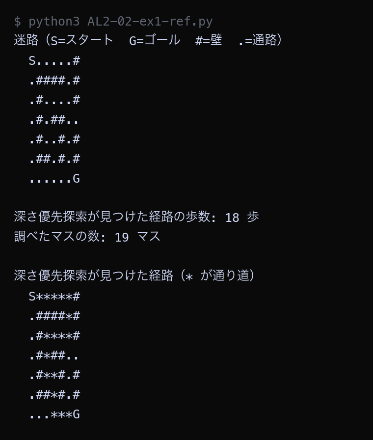

例題
例題1と例題2のコードを実行してください。まず作業フォルダを用意します。
VS Code でフォルダとファイルを用意する
Step 1: 作業フォルダを作る
- デスクトップに AL2 という名前のフォルダを作る（後期の授業ではずっと同じフォルダを使う）
- AL2 フォルダの中に No02 という名前のフォルダを作る
└── AL2/
├── No01/ ← 前回のファイル
└── No02/ ← 第2回はここに保存
Step 2: VS Code でフォルダを開く
- Visual Studio Code を起動する
- メニューから 「ファイル」→「フォルダーを開く」を選ぶ
- Step 1 で作った AL2/No02 フォルダを選んで開く
左側のエクスプローラーに No02 フォルダの中身が表示される（最初は空）。
Step 3: 例題ごとにファイルを作って実行する
- 左側エクスプローラーの No02 の横にある 新しいファイルアイコンをクリック
- ファイル名を入力して Enter（例題1なら
AL2-02-ex1.py） - 例題のコードブロック右上の コピーボタンをクリック
- VS Code の編集画面に 貼り付ける（Ctrl+V / Cmd+V）
- 保存する（Ctrl+S / Cmd+S）
- 右上の ▷（再生ボタン）をクリックして実行する
今回作るファイル（実践）: AL2-02-ex1.py, AL2-02-ex2.py。参考のコードを保存するときは、名前の最後に -ref を付ける
- 参考: コメントなしの完成したコード。まず読んで、全体の流れをつかむ
- 実践: アルゴリズムの要になる行が
____（穴）になっている。 丁寧なコメントと、コードの下の「ヒント」「候補」を見て、自分で埋めてから実行する
ファイル名は、参考が AL2-02-ex1-ref.py（ref = reference、参考）、
実践が AL2-02-ex1.py のように分けます（同じ名前にすると上書きされてしまうため）。
課題で使うのは実践のファイルです。
実行結果がページの画像と同じになれば正解です。ちがえば、どの穴がちがうかを考えて直します。
どうしても分からないときだけ、参考のコードと見比べてください。
今回のキーワード
| 用語 | 説明 |
|---|---|
| 深さ優先探索 | 行き止まりに当たるまで一方向へ進み、行き止まりなら1つ戻って別の道を試す探し方。見つかる道は最短とはかぎらない。 |
| スタック | あとから入れたものを先に取り出す入れもの。積み重ねた本と同じ。Pythonのリストでは append() で入れて pop() で取り出す。 |
| キュー | 先に入れたものを先に取り出す入れもの。レジの行列と同じ。Pythonでは deque の append() と popleft() を使う。 |
| 到達可能性 | 「ゴールへ行けるかどうか」だけを判定すること。最短の道は要らないので、深さ優先探索でも十分な場合が多い。 |
| トレードオフ | 一方を良くすると他方が悪くなる関係。幅優先探索と深さ優先探索は「道の短さ」と「調べる手間」がトレードオフの関係にある。 |
深さ優先探索で迷路を解く
前期に幅優先探索で解いたのと同じ形の迷路を、深さ優先探索で解きます。 幅優先探索のコードと見比べると、変わっているのはメモから取り出す行だけです。
| 探索方法 | メモの入れもの | 取り出す命令 | 取り出す場所 |
|---|---|---|---|
| 幅優先探索 | deque（キュー） | queue.popleft() | いちばん古い行 |
| 深さ優先探索 | list（スタック） | stack.pop() | いちばん新しい行 |
例題1（参考）── 完成したコード。コメントなしで全体の流れをつかむ。保存するなら AL2-02-ex1-ref.py の名前で
Python ── AL2-02-ex1-ref.py maze = [ "S.....#", ".####.#", ".#....#", ".#.##..", ".#..#.#", ".##.#.#", "......G", ] rows = len(maze) cols = len(maze[0]) for r in range(rows): for c in range(cols): if maze[r][c] == "S": start = (r, c) if maze[r][c] == "G": goal = (r, c) print("迷路（S=スタート G=ゴール #=壁 .=通路）") for line in maze: print(" " + line) print() stack = [start] came_from = {start: None} visited_order = [] while len(stack) > 0: current = stack.pop() visited_order.append(current) if current == goal: break r, c = current for dr, dc in [(-1, 0), (1, 0), (0, -1), (0, 1)]: nr = r + dr nc = c + dc if nr < 0 or nr >= rows or nc < 0 or nc >= cols: continue if maze[nr][nc] == "#": continue if (nr, nc) in came_from: continue came_from[(nr, nc)] = current stack.append((nr, nc)) path = [] node = goal while node is not None: path.append(node) node = came_from[node] path.reverse() print("深さ優先探索が見つけた経路の歩数:", len(path) - 1, "歩") print("調べたマスの数:", len(visited_order), "マス") print() picture = [list(line) for line in maze] for (r, c) in path: if picture[r][c] == ".": picture[r][c] = "*" print("深さ優先探索が見つけた経路（* が通り道）") for line in picture: print(" " + "".join(line))
▶ 実行結果

深さ優先探索が見つけた道は18歩でした。同じ迷路で幅優先探索が見つける道は12歩なので、6歩も長い道になっています。迷路の絵を見ると、上の行を右へ進んでから下りてくる大回りの道になっています。一方で調べたマスの数は19マスだけでした。
例題1（実践）── 参考と同じ方法を別のデータで。要の行が ____ になっているので、コメントを読みながら埋めて、AL2-02-ex1.py の名前で保存して実行する
Python ── AL2-02-ex1.py # 深さ優先探索で迷路を解く # 幅優先探索との違いは「メモのどこを読むか」だけ。 # 幅優先探索: いちばん古い行を読む → popleft() # 深さ優先探索: いちばん新しい行を読む → pop() # S = スタート、G = ゴール、# = 壁、. = 通路 maze = [ "S..#...", ".#.#.#.", ".#...#.", ".####..", "...#.#.", ".#.#.#.", ".#....G", ] rows = len(maze) cols = len(maze[0]) for r in range(rows): for c in range(cols): if maze[r][c] == "S": start = (r, c) if maze[r][c] == "G": goal = (r, c) print("迷路（S=スタート G=ゴール #=壁 .=通路）") for line in maze: print(" " + line) print() # --- 深さ優先探索 --- stack = [start] # これから調べる場所を書いたメモ came_from = {start: None} # 「その場所へ、どこから来たか」の記録 visited_order = [] # 調べた順番を記録する while len(stack) > 0: current = ____ # ← 穴1 visited_order.append(current) if current == goal: break r, c = current for dr, dc in [(-1, 0), (1, 0), (0, -1), (0, 1)]: nr = r + dr nc = c + dc if nr < 0 or nr >= rows or nc < 0 or nc >= cols: continue if maze[nr][nc] == "#": continue if (nr, nc) in came_from: continue came_from[(nr, nc)] = current ____ # ← 穴2 # --- ゴールからスタートへ逆にたどって経路を復元する --- path = [] node = goal while node is not None: path.append(node) node = came_from[node] path.reverse() print("深さ優先探索が見つけた経路の歩数:", len(path) - 1, "歩") print("調べたマスの数:", len(visited_order), "マス") print() picture = [list(line) for line in maze] for (r, c) in path: if picture[r][c] == ".": picture[r][c] = "*" print("深さ優先探索が見つけた経路（* が通り道）") for line in picture: print(" " + "".join(line))
穴埋め（____ を埋めてから実行する）
| 穴 | ヒント | 候補（1つが正解） |
|---|---|---|
| 穴1 | 深さ優先探索: メモのいちばん新しい行を読んで消す | A. stack.pop()B. stack.pop(0)C. stack[0] |
| 穴2 | 見つけたとなりのマスをメモの最後に書き足す | A. stack.append((nr, nc))B. stack.insert(0, (nr, nc))C. stack.pop() |
埋めたら保存して実行し、下の実行結果と同じになるか見比べる。ちがえば、どの穴がちがうかを考えて直す（上の「参考」のコードと見比べてもよい）。 答えは次回の授業の時刻に、ページのいちばん下の「解答例」に出ます。
▶ 実行結果

埋めて実行した結果が、この画像と同じになれば正解です。ちがうときは、どの穴がちがうかを考えて直してください。
2つの探索を同じ迷路で比べる
幅優先探索と深さ優先探索を1つのプログラムにまとめ、同じ迷路で走らせて比べます。
search 関数の中で mode が "bfs" か "dfs" かによって、取り出す行だけを切り替えています。
例題2（参考）── 完成したコード。コメントなしで全体の流れをつかむ。保存するなら AL2-02-ex2-ref.py の名前で
Python ── AL2-02-ex2-ref.py from collections import deque maze = [ "S.....#", ".####.#", ".#....#", ".#.##..", ".#..#.#", ".##.#.#", "......G", ] rows = len(maze) cols = len(maze[0]) for r in range(rows): for c in range(cols): if maze[r][c] == "S": start = (r, c) if maze[r][c] == "G": goal = (r, c) def neighbors(r, c): """上・下・左・右のうち、迷路の中にあって壁ではない場所を返す""" result = [] for dr, dc in [(-1, 0), (1, 0), (0, -1), (0, 1)]: nr = r + dr nc = c + dc if nr < 0 or nr >= rows or nc < 0 or nc >= cols: continue if maze[nr][nc] == "#": continue result.append((nr, nc)) return result def search(mode): """mode が "bfs" なら幅優先探索、"dfs" なら深さ優先探索で迷路を解く""" memo = deque([start]) came_from = {start: None} checked = 0 while len(memo) > 0: if mode == "bfs": current = memo.popleft() else: current = memo.pop() checked = checked + 1 if current == goal: break for next_cell in neighbors(current[0], current[1]): if next_cell in came_from: continue came_from[next_cell] = current memo.append(next_cell) path = [] node = goal while node is not None: path.append(node) node = came_from[node] path.reverse() return path, checked bfs_path, bfs_checked = search("bfs") dfs_path, dfs_checked = search("dfs") print("同じ迷路を2つの方法で解いた結果") print("-" * 46) print("方法 歩数 調べたマス数") print("幅優先探索 ", f"{len(bfs_path)-1:>4}歩", f"{bfs_checked:>10}マス") print("深さ優先探索 ", f"{len(dfs_path)-1:>4}歩", f"{dfs_checked:>10}マス") print("-" * 46) def draw(path, title): """通り道に * を付けて迷路を表示する""" picture = [list(line) for line in maze] for (r, c) in path: if picture[r][c] == ".": picture[r][c] = "*" print(title) for line in picture: print(" " + "".join(line)) print() print() draw(bfs_path, "幅優先探索の経路（12歩・最短）") draw(dfs_path, "深さ優先探索の経路（18歩・最短ではない）")
▶ 実行結果
幅優先探索は12歩・31マス調査、深さ優先探索は18歩・19マス調査という結果でした。幅優先探索は短い道を見つけるかわりに、たくさんのマスを調べています。深さ優先探索は調べるマスが少ないかわりに、遠回りの道を答えとして返しています。どちらが優れているかではなく、何がほしいかで選ぶという点が大切です。
例題2（実践）── 参考と同じ方法を別のデータで。要の行が ____ になっているので、コメントを読みながら埋めて、AL2-02-ex2.py の名前で保存して実行する
Python ── AL2-02-ex2.py # 幅優先探索と深さ優先探索を、同じ迷路で走らせて比べる from collections import deque maze = [ "S..#...", ".#.#.#.", ".#...#.", ".####..", "...#.#.", ".#.#.#.", ".#....G", ] rows = len(maze) cols = len(maze[0]) for r in range(rows): for c in range(cols): if maze[r][c] == "S": start = (r, c) if maze[r][c] == "G": goal = (r, c) def neighbors(r, c): """上・下・左・右のうち、迷路の中にあって壁ではない場所を返す""" result = [] for dr, dc in [(-1, 0), (1, 0), (0, -1), (0, 1)]: nr = r + dr nc = c + dc if nr < 0 or nr >= rows or nc < 0 or nc >= cols: continue if maze[nr][nc] == "#": continue result.append((nr, nc)) return result def search(mode): """mode が "bfs" なら幅優先探索、"dfs" なら深さ優先探索で迷路を解く""" memo = deque([start]) # これから調べる場所のメモ came_from = {start: None} checked = 0 # 何マス調べたか while len(memo) > 0: if mode == "bfs": current = ____ # ← 穴1 else: current = ____ # ← 穴2 checked = checked + 1 if current == goal: break for next_cell in neighbors(current[0], current[1]): if ____: # ← 穴3 continue came_from[next_cell] = current memo.append(next_cell) path = [] node = goal while node is not None: path.append(node) node = came_from[node] path.reverse() return path, checked bfs_path, bfs_checked = search("bfs") dfs_path, dfs_checked = search("dfs") print("同じ迷路を2つの方法で解いた結果") print("-" * 46) print("方法 歩数 調べたマス数") print("幅優先探索 ", f"{len(bfs_path)-1:>4}歩", f"{bfs_checked:>10}マス") print("深さ優先探索 ", f"{len(dfs_path)-1:>4}歩", f"{dfs_checked:>10}マス") print("-" * 46) def draw(path, title): """通り道に * を付けて迷路を表示する""" picture = [list(line) for line in maze] for (r, c) in path: if picture[r][c] == ".": picture[r][c] = "*" print(title) for line in picture: print(" " + "".join(line)) print() print() draw(bfs_path, f"幅優先探索の経路（{len(bfs_path) - 1}歩・最短）") draw(dfs_path, f"深さ優先探索の経路（{len(dfs_path) - 1}歩・最短ではない）")
穴埋め（____ を埋めてから実行する）
| 穴 | ヒント | 候補（1つが正解） |
|---|---|---|
| 穴1 | 幅優先探索: メモのいちばん古い行を読む | A. memo[-1]B. memo.popleft()C. memo.pop() |
| 穴2 | 深さ優先探索: メモのいちばん新しい行を読む | A. memo.popleft()B. memo.pop()C. memo[0] |
| 穴3 | すでに来たことがある場所は飛ばす | A. next_cell in came_fromB. next_cell in memoC. next_cell == goal |
埋めたら保存して実行し、下の実行結果と同じになるか見比べる。ちがえば、どの穴がちがうかを考えて直す（上の「参考」のコードと見比べてもよい）。 答えは次回の授業の時刻に、ページのいちばん下の「解答例」に出ます。
▶ 実行結果

埋めて実行した結果が、この画像と同じになれば正解です。ちがうときは、どの穴がちがうかを考えて直してください。